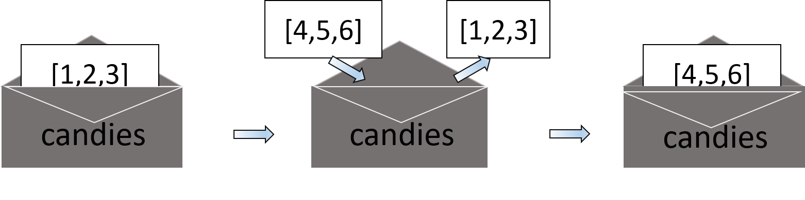
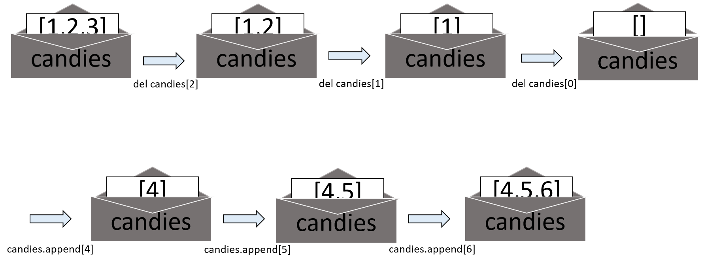

Other data structures¶
Strings¶
Lists aren’t the only data types that represent ordered sequences of values. For example, strings and lists are actually similar, if you consider a string to be a “list” of single text characters. Many of the things you can do with lists can also be done with strings: indexing; slicing; and using them with for loops, with len(), and with the in and not in operators.
name = 'aiadventures'
name[0]
'a'
name[-2]
'e'
name[0:4]
'aiad'
'Zo' in name
False
'z' in name
False
'p' not in name
True
for i in name:
print('* * * ' + i + ' * * *')
* * * a * * *
* * * i * * *
* * * a * * *
* * * d * * *
* * * v * * *
* * * e * * *
* * * n * * *
* * * t * * *
* * * u * * *
* * * r * * *
* * * e * * *
* * * s * * *
But lists and strings are different in an important way. A list value is a mutable data type: It can have values added, removed, or changed. However, a string is immutable: It cannot be changed. Trying to reassign a single character in a string results in a TypeError error, as you can see by entering the following into the cell below:
name = 'Lucy a cat'
name[5] = 'the'
---------------------------------------------------------------------------
TypeError Traceback (most recent call last)
<ipython-input-90-308901fabaef> in <module>
----> 1 name[5] = 'the'
TypeError: 'str' object does not support item assignment
The proper way to “mutate” a string is to use slicing and concatenation to build a new string by copying from parts of the old string
name = 'Lucy a cat'
newName = name[0:5] + 'the' + name[6:10]
name
'Lucy a cat'
newName
'Lucy the cat'
We used [0:5] and [6:10] to refer to the characters that we don’t wish to replace. Notice that the original 'Lucy a cat' string is not modified because strings are immutable.
Although a list value is mutable, the second line in the following code does not modify the list candies.
candies = [1, 2, 3]
candies = [4, 5, 6]
candies
[4, 5, 6]
The values in candies isn’t being changed here; rather, an entirely new and different list value [4, 5, 6] is overwriting the old list value [1, 2, 3].

If you wanted to actually modify the original list in candies to contain [4, 5, 6], you would have to do something like this:
candies = [1, 2, 3]
del candies[2]
del candies[1]
del candies[0]
candies.append(4)
candies.append(5)
candies.append(6)
candies
[4, 5, 6]
The del statement and the append() operations depicted below.

Changing a value of a mutable data type (like what the del statement and append() method do in the previous example) changes the value in place, since the variable’s value is not replaced with a new list value.
Tuple¶
The tuple data type is almost identical to the list data type, except in two ways. First, tuples are typed with parentheses, ( and ), instead of square brackets, [ and ].
candies = ('hello', 42, 0.5)
candies[0]
'hello'
candies[1:3]
(42, 0.5)
len(candies)
3
But the main way that tuples are different from lists is that tuples, like strings, are immutable. Tuples cannot have their values modified, appended, or removed.
candies[1] = 99
---------------------------------------------------------------------------
TypeError Traceback (most recent call last)
<ipython-input-110-3d1a94bc6652> in <module>
----> 1 candies[1] = 99
TypeError: 'tuple' object does not support item assignment
You can use tuples to convey to anyone reading your code that you don’t intend for that sequence of values to change. If you need an ordered sequence of values that never changes, use a tuple. A second benefit of using tuples instead of lists is that, because they are immutable and their contents don’t change, Python can implement some optimizations that make code using tuples slightly faster than code using lists.
Using list() and tuple()¶
Just like how str(42) will return '42', the string representation of the integer 42, the functions list() and tuple() will return list and tuple versions of the values passed to them. Try the following code into your Jupyter Notebook, and notice that the return value is of a different data type than the value passed.
tuple(['cat', 'dog', 5])
('cat', 'dog', 5)
list(('cat', 'dog', 5))
['cat', 'dog', 5]
list('hello')
['h', 'e', 'l', 'l', 'o']
Converting a tuple to a list is handy if you need a mutable version of a tuple value.
Dictionaries¶
Dictionary provides a flexible way to access and organize data. Like a list, a dictionary is a collection of many values. But unlike indexes for lists, indexes for dictionaries can use many different data types, not just integers. Indexes for dictionaries are called keys, and a key with its associated value is called a key-value pair.
In code, a dictionary is typed with braces, { }.
myphone = {'brand': 'apple', 'color': 'gray', 'model': 'iphoneX'}
This assigns a dictionary to the myphone variable. This dictionary’s keys are brand, color, and model. The values for these keys are apple, gray, and iphoneX, respectively. You can access these values through their keys:
myphone['brand']
'apple'
'My phone is of ' + myphone['color'] + ' color.'
'My phone is of gray color.'
Dictionaries can still use integer values as keys, just like lists use integers for indexes, but they do not have to start at 0 and can be any number.
items = {12345: 'Luggage Combination', 42: 'The Answer'}
Dictionaries vs Lists¶
Unlike lists, items in dictionaries are unordered. The first item in a list named items would be items[0]. But there is no “first” item in a dictionary. While the order of items matters for determining whether two lists are the same, it does not matter in what order the key-value pairs are typed in a dictionary.
animals1 = ['cats', 'dogs', 'moose']
animals2 = ['dogs', 'moose', 'cats']
animals1 == animals2
False
mypet1 = {'name': 'badal', 'species': 'dog', 'age': '3'}
mypet2 = {'species': 'dog', 'age': '3', 'name': 'badal'}
mypet1 == mypet2
True
Because dictionaries are not ordered, they can’t be sliced like lists.
Trying to access a key that does not exist in a dictionary will result in a KeyError error message, much like a list’s IndexError error message. Enter the following in the cell below, and notice the error message that shows up because there is no 'color' key.
new = {'name': 'badal', 'age': 7}
new['color']
---------------------------------------------------------------------------
KeyError Traceback (most recent call last)
<ipython-input-127-4f331409f732> in <module>
----> 1 new['color']
KeyError: 'color'
Though dictionaries are not ordered, the fact that you can have arbitrary values for the keys allows you to organize your data in powerful ways. Say you wanted your program to store data about your friends’ birthdays. You can use a dictionary with the names as keys and the birthdays as values.
Dictionary Methods¶
There are three dictionary methods that will return list-like values of the dictionary’s keys, values, or both keys and values: keys(), values(), and items(). The values returned by these methods are not true lists: They cannot be modified and do not have an append() method. But these data types (dict_keys, dict_values, and dict_items, respectively) can be used in for loops. Lets see how these methods work.
value() method¶
Let’s create a dictionary named as newdict its content will be as follows.
newdict = {'color': 'red', 'age': 42}
a for loop iterates over each of the values in the newdict dictionary
for v in newdict.values():
print(v)
red
42
keys()method¶
A for loop can also iterate over the keys.
for k in newdict.keys():
print(k)
color
age
items() method¶
In items() method you will get results in tuples according to the values of newdict. The tuple will contain key along with it’s value.
for i in newdict.items():
print(i)
('color', 'red')
('age', 42)
Using the keys(), values(), and items() methods, a for loop can iterate over the keys, values, or key-value pairs in a dictionary, respectively. Notice that the values in the dict_items value returned by the items() method are tuples of the key and value.
If you want a true list from one of these methods, pass its list-like return value to the list() function.
newdict = {'color': 'red', 'age': 42}
newdict.keys()
dict_keys(['color', 'age'])
list(newdict.keys())
['color', 'age']
The list(newdict.keys()) line takes the dict_keys value returned from keys() and passes it to list(), which then returns a list value of ['color', 'age'].
You can also use the multiple assignment trick in a for loop to assign the key and value to separate variables.
for k, v in newdict.items():
print('Key: ' + k + ' Value: ' + str(v))
Key: color Value: red
Key: age Value: 42
in operator¶
Recall from the previous chapter the in operator which can check whether a value exists in a list or not. You can also use these operators to see whether a certain key or value exists in a dictionary.
pet = {'name': 'Zophie', 'age': 7}
'name' in pet.keys()
True
'Zophie' in pet.values()
True
'color' in pet.keys()
False
not in operator¶
'color' not in pet.keys()
True
'color' in pet
False
In the previous example, notice that 'color' in pet is essentially a shorter version of writing 'color' in pet.keys(). This is always the case: If you ever want to check whether a value is (or isn’t) a key in the dictionary, you can simply use the in (or not in) keyword with the dictionary value itself.
Conclusion¶
Questionaire¶
How would you replace 65 with 92 from following example
que_1 = (0,1,2,{'Name':'Suresh', 'Marks':[65,89,72,80,77]})Which data structures are known as Mutable ?
Are keys in dictionary replaceable?
What is the output of the following code
que_4 ={'key1':'value1', 'key2': 'value2', 'key3':'value3', 'key4': 'value4'}
que_4['key1':'key3']
Exercise¶
We think it is enough Python concepts to develop a small game named 3 Missionanries & 3 Cannibals. Click here to download the problem statement.